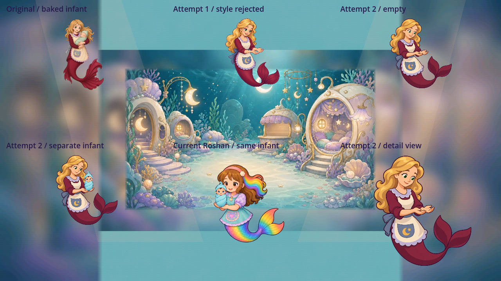
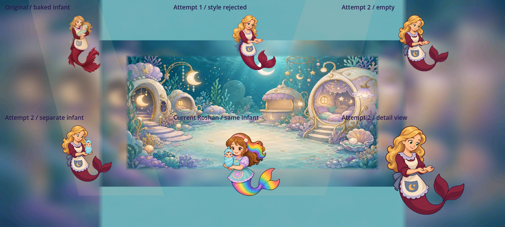

Faron nursery helper: empty-handed source refinement
A reversible first state for the helper who receives a separately owned nursery infant.
Source and static native fit: provisional4.6/5. The live safe-return action remains3.4/5.The current game still binds the original Faron. This packet preserves both fresh generations, the rejected4.3 attempt, exact prompt/native hashes and two native Mobile static views. It does not complete the pickup/return animation or the comprehensive jobs report. Owner acceptance remains pending.
Why this one replacement is needed
The runtime PNG and both existing source masters show the same infant painted into Faron's arms. The game's separately owned missed infant cannot then be truthfully picked up and returned with that static pose. The source-only opinion was4.4, the mounted opinion4.1. Those originals remain preserved. A reusable empty-handed state is the first missing contact source; it does not by itself supply the approach, pickup, carry, lower and settle states.
Identity follows the existing golden-blonde hair, green eyes, burgundy top/tail, cream apron, lavender scallops and blue-grey moon-and-star pocket. Both candidates were independently generated from text; no existing source pixels or reference images were fitted into them.
Original D2A-0078
Source4.4 / earlier mounted4.1Kind expression and established identity are useful. The finer hair/fabric rendering and baked infant prevent this image from owning a new separate pickup.
Original remains runtime-bound; no source/master edit.
Fresh attempt1
4.3 — style rejectedThe complete connected arms and empty receiving hands solve the source-purpose gap. Glossy ribbon hair, fine value changes and a glamorous facial treatment remain too elaborate for the painted game language. The native190px view retains those differences.
Exact first prompt
Fresh attempt2
Source4.6 / static native fit4.6Broad calm curls, quiet cream fabric, large pocket symbols and a readable plum contour clarify the same character. Connected shoulders, elbows and two receiving palms are visible. The complete burgundy tail has two broad fluke lobes. The native PNG and generated alpha remain unchanged.
Exact refinement promptThis is a candidate source, not owner-accepted runtime art.Correct-alpha native game-size comparisons
Official Godot4.7.2 Mobile renders the original and both new helpers as190px cards over the actual nursery backdrop. The lower row shows the simplified helper with a separate60px infant card, the current250px Roshan with an80px card, and a300px helper detail view. The hand sockets are manually sampled diagnostic positions. These are independently held states with no animation, input or progress.
1280×720

1600×720

The simplified helper remains legible at both aspects. The separate infant base meets the cupped palms in the static fit. Correct native alpha shows no visible white sticker fringe. Neither image proves continuous pickup, carrying, lowering or resting contact.
Exact renderer, source and geometry receipt
Next acceptance work
Build and review authored helper approach, pickup, carry, lower and settle states with one authoritative infant and fixed safe supports. Verify entry/exit, interruptions and no passive progress, then review every live nursery phase. Whole-image production sizing, texture residency and device performance remain unverified. Hundreds of other weak job sources and played actions, full Day One coverage and final comprehensive owner approval remain open.
Source opinions are drafting judgments under the design rules. No score5, finding closure, integration, release or game-wide4.5 acceptance is claimed.